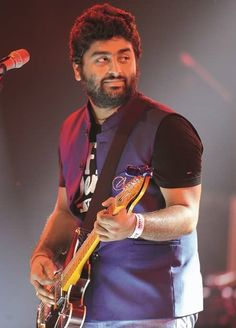
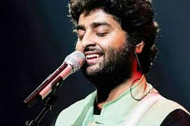

KNOW THE SINGER ARIJIT SINGH



Arijit Singh
Arijit Singh (born 25 April 1987) is an Indian Bengali playback singer.He sings predominantly in Hindi and Bengali but has also performed in various other Indian languages.He is the recipient of a National Award and a record six Filmfare Awards.Singh began his career when he participated in the contemporary reality show, Fame Gurukul in 2005, but didn't receive widespread recognition before the release of "Tum Hi Ho" and "Chahun Main Ya Naa" in 2013.He was declared the most-streamed Indian artist of the year 2020 by Spotify.Arijit Singh was born on 25 April 1987[1] in Jiaganj, Murshidabad, West Bengal to Kakkar Singh, a Sikh father[15] and a Bengali mother.[16] He began his music training at a very young age at home. His maternal aunt trained in Indian classical music, and his maternal grandmother used to sing. His maternal uncle played the tabla, and his mother also sang and played the tabla. He studied at Raja Bijay Singh High School and later at the Sripat Singh College, a University of Kalyani affiliate.[16] According to him he "was a decent student, but cared more about music" and his parents decided to train him professionally. He was taught Indian classical music by Rajendra Prasad Hazari and trained in tabla by Dhirendra Prasad Hazari. Birendra Prasad Hazari taught him Rabindra Sangeet (songs written and composed by Rabindranath Tagore) and pop music.[16] At the age of three, he started training under the Hazari brothers, and at the age of nine, he got a scholarship from the government for training in vocals in Indian classical music.[17] Growing up, he listened to Mozart, Beethoven and, Bengali classical music.[citation needed] He idolized musicians like Bade Ghulam Ali Khan, Ustad Rashid Khan, Zakir Hussain and Anand Chatterjee, and enjoyed listening to Kishore Kumar, Hemant Kumar and, Manna Dey.[18] Early career Singh's musical career began when his guru Rajendra Prasad Hazari, who felt that "Indian classical music was a dying tradition", insisted him to leave his hometown and participate in the reality show Fame Gurukul (2005) at the age of 18.[17][19] He was eliminated by audience polling, finishing in sixth place.[20] During the show, filmmaker Sanjay Leela Bhansali recognized his talent and had him sing "Yun Shabnami" a song scheduled to be used in his upcoming film Saawariya. During production, the script changed and the song was no longer required. It was never released.[21] After the Fame Gurukul, Kumar Taurani, the head of Tips, signed him for an album which was never released.[16][22] He participated in another reality show 10 Ke 10 Le Gaye Dil and won.[23] He chose to move to Mumbai in 2006 to freelance, staying in a rented room in the Lokhandwala area of the city.[11][16][19] He invested the prize money of ₹10 Lakh from 10 ke 10 Le Gaye Dil to build his recording studio.[19] He became a music producer and began composing music and singing pieces for advertisements, news channels and radio stations.[11][24][25] Singh spent a part of his early musical career as a music programmer and music producer for music directors such as Shankar-Ehsaan-Loy, Vishal-Shekhar, Mithoon, Monty Sharma and Pritam. While working with other composers he supervised the vocals, and the chorus sections, but it was while working with Pritam, that he began to produce and program music by himself. Career
247 tracks|128 albums